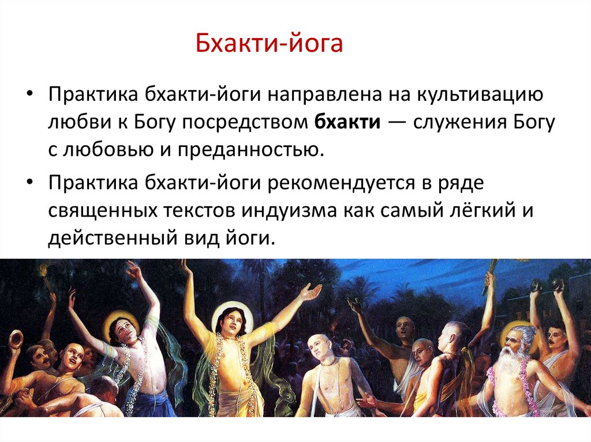

| На тот момент, я «был в поиске», старался максимально вовлечься в изучение Вед (индийских на тот момент),
так как от информации веяло истинностью и логикой. Единственным источником на тот момент было
Общество Сознания Кришны, которое проповедовало Бхакти-Йогу, как основной способ достижения контакта
с Высшим разумом. В терминах эзотерики это, как Связь с Творцом, Ощущение Целостности Мироздания.
Суть пути Бхакти, как я его понял, есть любое действие и даже бездействие, любую активность в своей жизни,
ты осуществляешь не для себя, а для Бога. Мне трудно давался этот аспект, потому что я не особо религиозен
и мне было необходимо прочувствовать в чем именно состоит принцип Служения и как работает механизм.
Как я понял для себя впоследствии, сам процесс Бхакти Йоги очень ценен не самим объектом Служения (Богом),
а именно самим процессом, тем умонастроением, в котором ты пребываешь. Как отмечал, академик Николай Викторович
Левашов, эволюционное развитие Сущности (Мозга) человека возможно в случае, когда человек действует во вне,
по сути, производит служение внешнему миру. И тут вероятно важна перспектива. Чем глобальнее и объемнее в
пределах Мироздания твой Обьект служения, тем бОльший результат отдачи происходит в процессе эволюционного
развития. Кажется, что такой вывод близок к Истине. |
 |